VALIdation of Decision support models for rAdioThErapy
Twenty-nine investigators in eleven countries across North America, Europe and Australia.
A multi-institutional consortium for the rigorous external validation of radiotherapy outcome and decision-support models, so that clinicians can trust the tools they use.
Chaired by Joseph O. Deasy (Memorial Sloan Kettering Cancer Center) and co-chaired by Laura Cella (CNR, Naples).
Where the members are
Member institutions

Europe

Twenty cities, eleven countries. Hover over or tap a marker for the institution; the full list is in Members.Membership as of October 2026.
Our mission
Radiotherapy decision-support models predict tumour control, toxicity and survival from dose, imaging and clinical data. Most are published once and never tested on patients they have not seen. VALIDATE exists to change that.
The consortium brings institutions together to run published models on independent patient cohorts, under analysis plans that are locked before any data are touched, and to report whether each model discriminates between patients and whether its probabilities are numerically right. The code travels; the patient data stay where they were collected.
The evidence then flows to the professional societies. VALIDATE does not write guidelines; it gives the organisations that do, and the clinicians who use these models, something credible to build on.
For VALIDATE, success will be a steady stream of radiotherapy decision-support models with credible, multi-institutional, calibration-aware external validation, producing tools clinicians can trust.
Consortium working programme, May 2026Guidance from one era, treatment in another
The dose–volume limits used in clinics today were largely set by QUANTEC in 2010, from outcomes of the two- and three-dimensional conformal era. Treatment has since moved through IMRT, VMAT, adaptive and MR-guided delivery, proton therapy and AI-assisted planning. Whether models built on the old data still hold for patients treated with the new techniques is an open question that only external validation can answer.
- 19952D and 3D conformal radiotherapy, the era of the data behind most dose–volume guidance
- 2005Intensity-modulated radiotherapy (IMRT)
- 2010QUANTEC publishes the dose–volume guidance still in use
- 2018Adaptive radiotherapy, MR-linac
- 2026AI-guided planning and proton therapy, with QUANTEC guidance still conventional
Sources: Bentzen SM, Constine LS, Deasy JO, et al. Int J Radiat Oncol Biol Phys 2010;76(3 Suppl):S3–S9, doi:10.1016/j.ijrobp.2009.09.040; Marks LB, Yorke ED, Jackson A, et al. Int J Radiat Oncol Biol Phys 2010;76(3 Suppl):S10–S19, doi:10.1016/j.ijrobp.2009.07.1754.
How we work
Seven commitments shape every validation the consortium runs.
- Share models, not data
- The code travels; patient data stay at each institution. Sites run the model locally and return only summary statistics.
- Pre-register the analysis
- A statistical analysis plan is written, circulated and locked before any data are touched, following TRIPOD-style reporting.
- At least three independent institutions
- Every validation runs at three or more institutions distinct from the model's developer, usually four cohorts when the developer's own cohort is included.
- Open analysis code
- Containers, Jupyter notebooks and R scripts that any group can run, so results are reproducible and there is no dependency drift between sites.
- Aggregated results only
- Nothing that could re-identify a patient leaves an institution.
- Discrimination and calibration, always both
- A model must rank patients correctly and its probabilities must be numerically right. Calibration drift is the primary failure mode.
- Inform, do not prescribe
- Evidence flows to ESTRO, ASTRO and other societies for formal guideline work. VALIDATE does not issue guidelines.
Read the full approach, the barriers it answers and the open questions
Members
Twenty-nine investigators in radiation oncology, medical physics, imaging and biostatistics, from eleven countries.
Australia
- Sir Charles Gairdner Hospital and The University of Western Australia Perth
- Martin A. Ebert
Canada
- Princess Margaret Cancer Centre, University Health Network Toronto
- Andrew Hope
- Caryn Geady
Denmark
- Rigshospitalet and DTU Health Tech Copenhagen
- Ane L. Appelt
- Odense University Hospital and University of Southern Denmark Odense
- Carsten Brink
- Capital Region of Denmark Copenhagen
- Vaiva Kaveckyte
Germany
- University Hospital Tübingen Tübingen
- Daniela Thorwarth
Italy
- Institute of Biostructures and Bioimaging, National Research Council (CNR) Naples
- Laura Cella co-Chair
- IRCCS Ospedale San Raffaele Milan
- Claudio Fiorino
- Fondazione IRCCS Istituto Nazionale dei Tumori Milan
- Tiziana Rancati
Netherlands
- University Medical Center Groningen (UMCG) Groningen
- Johannes A. (Hans) Langendijk
- Peter van Luijk
- Lisanne V. van Dijk
- Netherlands Cancer Institute (NKI) Amsterdam
- Jan-Jakob Sonke
- Barbara Stam
Norway
- Norwegian University of Science and Technology (NTNU) Trondheim
- René M. Winter
Spain
- Vall d’Hebron Institute of Oncology (VHIO) Barcelona
- Laia Humbert-Vidan
Sweden
- Lund University Lund
- Per Munck af Rosenschöld
- Karolinska Institutet and Karolinska University Hospital Stockholm
- Eva Onjukka
United Kingdom
- The University of Manchester Manchester
- Alan McWilliam
United States
- Memorial Sloan Kettering Cancer Center New York
- Joseph O. Deasy Chair
- Maria Thor
- The University of Texas MD Anderson Cancer Center Houston
- Clifton D. Fuller
- Sara Thrower
- Warren Floyd
- Moffitt Cancer Center Tampa
- Issam El Naqa
- University of Pennsylvania Philadelphia
- Ying Xiao
- University of Michigan Ann Arbor
- Charles S. Mayo
- Sylvester Comprehensive Cancer Center, University of Miami Miami
- Chiara La Tessa
Membership as of October 2026. Institutions that would like to take part in a validation, and investigators with a published model they would like to see validated, are welcome to contact the Chairs.
Validation projects
Four areas where published models are being put to the test across member institutions.
Local tumour control
Diffusion-weighted MRI (ADC) as a predictor of local failure after head-and-neck radiotherapy.
Long-term xerostomia
Dose to the parotid stem-cell region compared with mean parotid dose.
Lymphopenia and survival
Published lymphopenia and overall-survival models in thoracic radiotherapy.
Radiation pneumonitis
Mean lung dose combined with pre-treatment FDG-PET uptake of normal lung.
The scientific question, approach and leads for each project
VALIDATE milestones
- The consortium's working group on lymphopenia in thoracic radiotherapy convenes.
- VALIDATE meeting at ESTRO 2026 in Stockholm: the working programme is updated and four validation projects are active.
Contact
The consortium is chaired by Joseph O. Deasy and co-chaired by Laura Cella.
Write to either Chair to propose a model for validation, to take part as a validating institution, or to ask about the consortium's work. The consortium's web address is validate4rt.org.